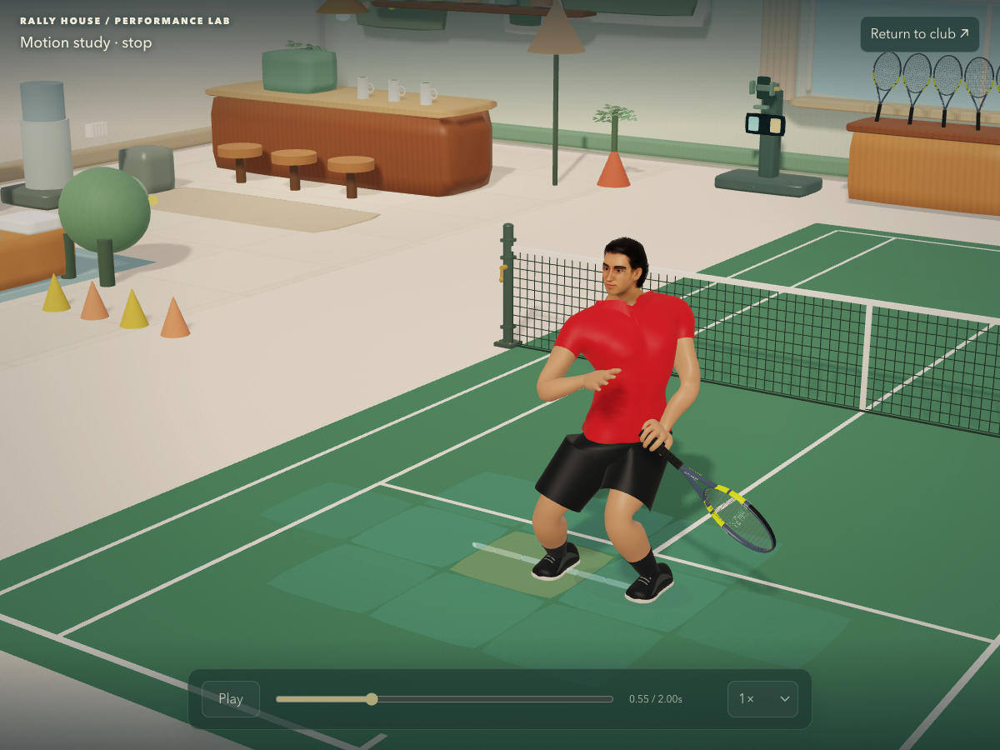
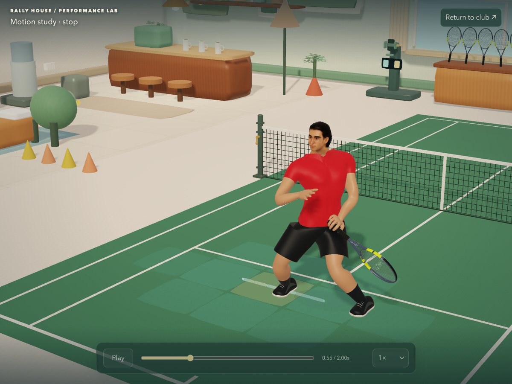

RALLY HOUSE / MOTION STUDY · NOV 25
Keep the landing foot steady.
Releasing movement during a running shot used to pull the receiving shoe inward abruptly. The stepping cycle now keeps its last target when travel stops.
Play the local build ↗ · Earlier motion improvements
Matched playback
Same character, camera and movement commands. Each recording includes normal speed, quarter speed and paused frames.
Before · 9de4d831After · preserved landing target
At movement release · 0.55 seconds

Before: the receiving shoe jumps inward.
After: the shoe stays on its existing path.Mobile-sized WebKit replay
402 × 874 desktop WebKit viewport. This is not physical iPhone validation.
Verification and limits
Five focused test suites pass. Twelve deterministic rally traces match the previous build exactly across 19,854 frames and 187 contacts. The animation change does not alter the checked ball, contact, input-cue or scoring states.
This corrects the stop-frame jump. The distance-driven foot cycle can still briefly hold an airborne foot until stroke recovery. This pass does not add a new planted-stop animation or change gameplay timing.
Detailed results · Live gameplay and replay recording